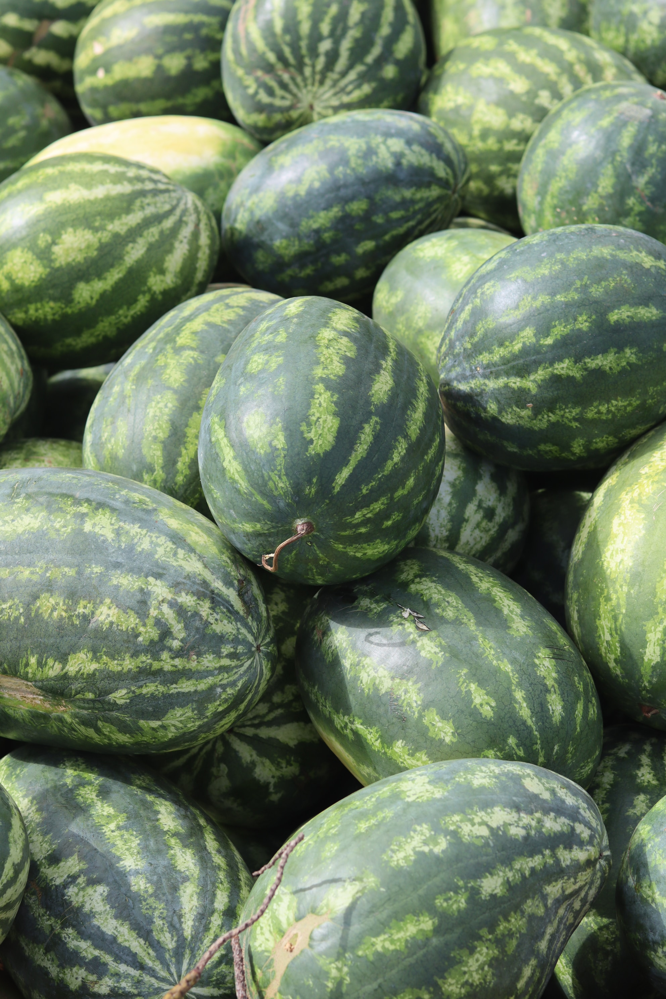

About Melons
Melons are delicious and juicy fruits that come in various varieties, including watermelon, cantaloupe, and honeydew. These fruits are a summer favorite, enjoyed for their sweet and refreshing taste. Growing melons in your garden requires proper care and attention to provide optimal conditions for these delectable fruits to thrive.
Steps to Grow Melons
- Choose a sunny location with well-drained soil for planting melons.
- Start melon seeds indoors or directly sow them in the garden after the last frost.
- Provide adequate space between melon plants to allow for proper growth and spreading.
- Water melon plants consistently, especially during dry periods, to keep the soil consistently moist.
- Fertilize with a balanced fertilizer suitable for fruiting plants according to the recommended schedule.
- Use mulch to retain soil moisture and suppress weeds around the melon plants.
- Harvest melons when they are fully ripe, have a sweet fragrance, and show signs of maturity.
Extra Information
Melons are not only delicious on their own but can also be used in salads, smoothies, and desserts. Each melon variety has its own unique flavor profile and nutritional benefits. Pay attention to the specific requirements of the melon variety you choose to grow and enjoy the bounty of fresh, homegrown melons during the summer months.